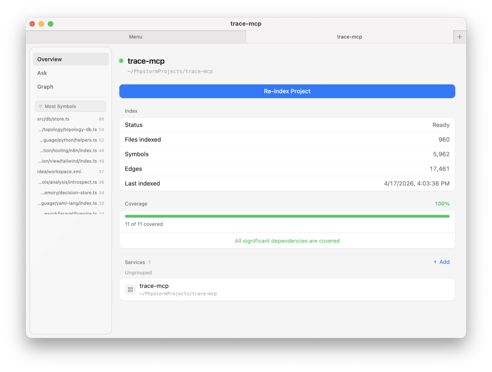
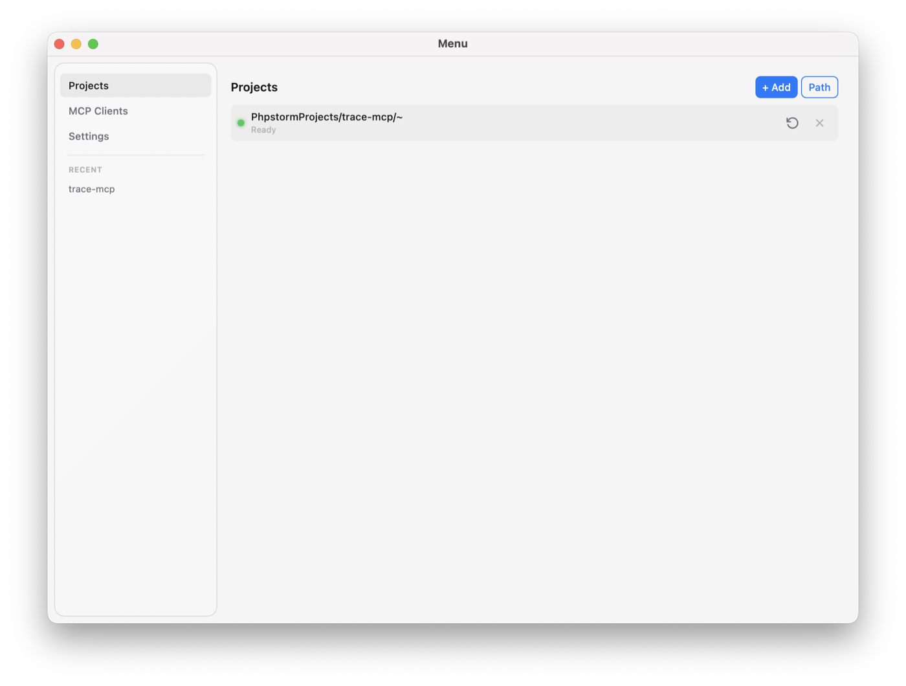

AI agents recompute the same work. We make them reuse instead.
AI systems don't scale because they recompute instead of reuse — re-reading the same files, re-traversing the same dependencies, re-inflating context every turn. trace-mcp builds a framework-aware graph of your codebase once, then serves it through MCP so agents reason from a precomputed structure instead of brute-reading the repo. Less wasted work means lower cost, lower latency, and fewer hallucinations in production.
Agents recompute instead of reusing.
Show the leak. Explain it. Close it. Keep it closed.
get_change_impact call instead of 80 Greps and 190 reads.
This is how agents stop recomputing and start reusing.
Computed once — every symbol, every edge, across 81 languages in one directed graph. The agent queries it instead of rediscovering it each turn.
Framework-aware — routes to controllers, Inertia to Vue, Eloquent to migrations. 58 integrations capture edges the agent would otherwise reconstruct from raw files.
Compiler-grade where it matters — optional LSP enrichment with tsserver, pyright, gopls for call resolution that survives across calls.
Reused, not rebuilt — 300ms file-watcher debounce and content-hashed incremental reindex keep the graph fresh without redoing finished work.
Connect your repository
Run trace-mcp add in your repo. Frameworks are detected automatically — Laravel, Django, Next.js, NestJS, Rails, 58 in total.
Index into a graph
Tree-sitter parses symbols, plugins resolve framework edges, optional LSP enriches with compiler-grade call data. Stored locally in SQLite + FTS5.
Expose to your agents
138 MCP tools become available in Claude Code, Cursor, Windsurf, VS Code — or any custom agent that speaks MCP over stdio or HTTP.
Recomputation becomes reuse.
+ 133 more — impact analysis, decision memory, security, architecture. Full reference →
Search results for the agent to re-read
- Returns files and snippets — the agent still has to traverse them
- Same query, same output, every turn — no reuse across calls
- No unified graph; framework edges are rediscovered from text
- Bolted onto agent workflows, not designed for them
A precomputed graph the agent reuses
- 138 tools that return answers, not files to read
- One incremental index, queried per task — not rebuilt per turn
- Single graph across every symbol, edge, and framework
- Native MCP protocol, zero adapter code
Agents need reuse, not more search.
- / 01Computed once, queried many times — a graph, not a text index that gets re-ranked every turn.
- / 02Framework-aware edges across 58 integrations — routes, ORMs, views, DI captured up front, not rediscovered from raw files.
- / 03Tools that return answers, not snippets to read —
get_change_impact,get_call_graph,find_usagesover a precomputed structure. - / 04Reuse survives the session — incremental reindex, decision memory, agent-behavior rules keep cost from rebounding.
This is not code search.
This is recomputation → reuse for AI systems.


Graph traversal instead of file-by-file reading. Agents ship features with fewer broken changes and less context thrash.
Plug trace-mcp into internal dev tools. Your copilot answers "what calls this?" in one call instead of ten.
Every codemod previewed, every rename graph-verified. PR bots comment with symbol-level diff and blast radius.
Repository-level access control
One SQLite database per project under ~/.trace-mcp/. Nothing is written inside your repo unless you opt in.
Secure handling of code
No API keys, no cloud services. Bundled ONNX embeddings. Fully offline after first install.
Safe modification workflows
Every refactor has a dry-run preview and diff review. Guard hook blocks destructive operations from agents.
/ See Your Waste
Indexes the project, runs 11 structured task benchmarks, prints per-task token cost — without trace-mcp vs. with. Time-to-value: ~5 minutes on a real repo.
/ Wire In Your Agent
Configures your MCP client (Claude Code, Cursor, Windsurf), installs the guard hook, updates CLAUDE.md. One command per machine.
/ Index The Project
Detects frameworks, indexes the codebase, registers the project. The graph stays incrementally fresh from here on.
Do I need API keys or a cloud account?
+
Where does the index live?
+
~/.trace-mcp/ — one SQLite database per project, plus shared decision and topology databases. Nothing is written into your project directory unless you opt in with .traceignore or .trace-mcp/.config.json.
Does it work for monorepos and multi-service codebases?
+
subproject_add_repo links separate repositories into a unified topology. Cross-service impact analysis traces API calls across service boundaries with confidence scores.
How does it stay up-to-date?
+
What about my framework? Is it supported?
+
~/.trace-mcp/plugins/. Most plugins are ~200–500 lines.
Is it safe to run on production codebases?
+
apply_rename, apply_codemod) require explicit confirmation and support dry-run preview. The guard hook blocks accidental destructive operations from your AI agent.
Recomputation → Reuse.
The execution layer for AI systems.
AI systems don't scale because they recompute instead of reuse. Every turn costs tokens, latency, and reasoning quality on work the agent has already done. trace-mcp turns recomputation into a precomputed, queryable structure — starting with code, where the noise is loudest, and extending to anywhere agents pay twice for the same answer.
Stop burning tokens.
Make AI work at scale.
~40–50% lower token usage on average in production. Up to 94–99% in structured tasks. One install. Every project. Every AI agent that speaks MCP.